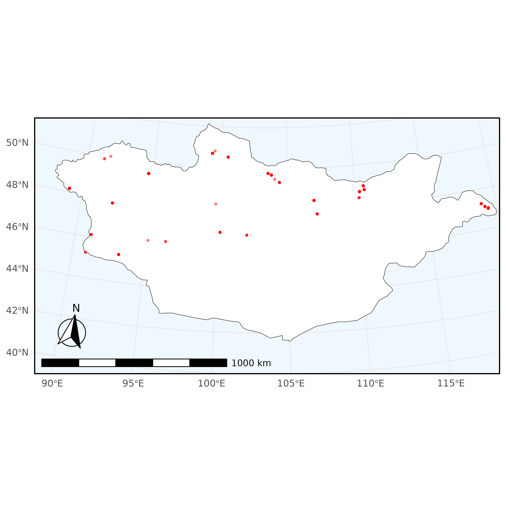
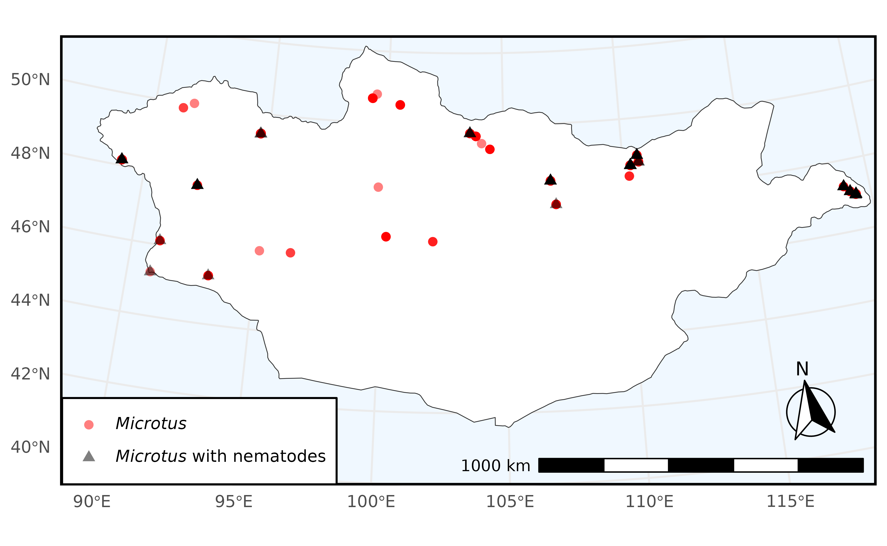

In this example, we query Arctos for all specimens of genus Microtus collected in Mongolia currently held in the collection of mammals of the Museum of Southwestern Biology which have been examined for parasites. After that, we filter the downloaded data to find the specimens that were found to have nematodes and use this filter to plot the spatial distribution of specimens found with and without nematodes.
To begin, make sure to load the library:
# install.packages("ArctosR")
# install.packages("ggplot2")
# install.packages("ggspatial")
# install.packages("ggtext")
# install.packages("maps")
# install.packages("patchwork")
# install.packages("sf")
library(ArctosR)
library(ggplot2)
library(ggspatial)
library(ggtext)
library(maps)
library(patchwork)
library(sf)
#> Linking to GEOS 3.12.1, GDAL 3.8.4, PROJ 9.4.0; sf_use_s2() is TRUEExploring Arctos options
First, we can view all parameters we can use to search by on Arctos:
# Request a list of all query parameters.
query_params <- get_query_parameters()
# Explore all parameters.
View(query_params)The query parameters we are interested in using are:
guid_prefix, genus, country.
Next, we can view a list of all parameters we can ask Arctos to return by calling:
# Request a list of all result parameters. These are the names that can show up
# as columns in a dataframe returned by ArctosR.
result_params <- get_result_parameters()
# Explore all parameters.
View(result_params)The parameters we are interested in returning are: guid,
scientific_name, dec_long,
dec_lat, verbatim_date, parts,
partdetail.
Each parameter has a category. If we are only interested in certain
categories of result parameter, we can filter the data.frame returned by
get_result_parameters() like so:
Requesting data
Next, we find the number of specimens matching the query we wanted to
perform. The first three arguments give values to some query parameters
we queried before with the get_query_parameters
function.
We use the filter_by parameter to filter for specimens
which only have the attribute ‘examined for’ with the value ‘parasite’
which indicates that the specimen has undergone some screening for
parasites. Attributes are additional data about a record such as
quantitative information or a record of additional processing done to
the record.
# Request just the number of records matching a query.
count <- get_record_count(country = "Mongolia", genus = "Microtus",
guid_prefix = "MSB:Mamm",
filter_by=list("examined for"="parasite"),
api_key=YOUR_API_KEY)It is helpful to call this first to make sure that we aren’t asking
for too many items from Arctos. Next, to download data, we specify our
query, and then use the columns parameter to list all of the result
parameters we want from our query. Finally, we specify that we want to
download all records. This is necessary because Arctos paginates
results, returning only 100 at a time. Setting
all_records = TRUE lets get_records repeatedly
query Arctos until it receives all records from the search.
# Request to download all available data matching a query (specific columns).
microtus <- get_records(country = "Mongolia", genus = "Microtus",
guid_prefix = "MSB:Mamm",
columns = list("guid", "scientific_name", "dec_long",
"dec_lat", "verbatim_date", "parts",
"partdetail"),
filter_by=list("examined for"="parasite"),
all_records = TRUE,
api_key=YOUR_API_KEY)In Arctos, some table entries, such as partdetail are
themselves tables. We can expand these tables into data.frames
using:
# Expand a column that contains complex information in JSON format
expand_column(query = microtus, column_name = "partdetail")The object returned from get_records contains both data
and metadata about the request which is useful for making further
requests based on the data returned from the first request. To get the
data.frame of the response, use response_data and pass in
the response:
# Grab the dataframe of records from the response.
microtus_df <- response_data(microtus)
# Filter out records which are missing latitude and longitude information
microtus_df <- microtus_df[microtus_df$dec_lat != "" & microtus_df$dec_long != "", ]Filtering by attributes
Now, we write a custom function to check the partdetail
entries of each specimen for whether or not nematodes were present in
the specimen.
# Filter the data to keep only Microtus records in which nematodes were found
## Whole-word match for 'nematode' or 'nematodes'
pattern <- "\\bnematodes?\\b"
## A small function to check within data.frames in partdetail
has_nematode <- function(df) {
if (!is.data.frame(df) || is.null(df[["part_name"]])) {
return(FALSE)
} else {
return(any(grepl(pattern, df[["part_name"]], ignore.case = TRUE, perl = TRUE)))
}
}
## Add column that is TRUE when a record has a nematode and FALSE otherwise
microtus_df$nematode <- sapply(microtus_df$partdetail, has_nematode)
## Subset of microtus_df with matches
microtus_df_nematode <- microtus_df[microtus_df$nematode == TRUE, ]
microtus_df_no_nematode <- microtus_df[microtus_df$nematode == FALSE, ]
## Number of Microtus from Mongolia
nrow(microtus_df)
#> [1] 886
## Number of Microtus from Mongolia that had nematodes
nrow(microtus_df_nematode)
#> [1] 111
## Number of Microtus from Mongolia that did not have nematodes
nrow(microtus_df_no_nematode)
#> [1] 775Plotting spatial data
We can plot the spatial distribution of specimens with and without detected nematodes using the ggplot2 package. First, we can simply create a plot of the distribution of all specimens over Mongolia.
# Initial plot of Microtus sampled in Mongolia
plot_map <- map_data("world", region=c("Mongolia"))
mongolia1 <- ggplot(plot_map, aes(long, lat)) +
geom_polygon(
aes(group = group), fill = "white", color = "gray20",
linewidth = .2) +
geom_jitter(
data = microtus_df,
aes(x = as.numeric(dec_long), y = as.numeric(dec_lat),
color = "Microtus", shape = "Microtus"),
alpha = .5, size = 1.0
) +
scale_color_manual(
values = c("Microtus" = "red"),
labels = c("*Microtus*")
) +
scale_shape_manual(
values = c("Microtus" = 16),
labels = c("*Microtus*")
) +
labs(
color = "Genus", shape = "Genus", x = NULL, y = NULL
) +
coord_sf(
crs = "+proj=lcc +lat_1=44 +lat_2=50 +lat_0=47 +lon_0=103.5 +x_0=0 +y_0=0 +datum=WGS84 +units=m +no_defs",
xlim = c(87, 120),
ylim = c(40, 52.5),
default_crs = sf::st_crs(4326),
expand = FALSE
) +
annotation_scale(
location = "bl",
width_hint = 0.4
) +
annotation_north_arrow(
location = "bl",
which_north = "true",
pad_x = unit(0.2, "in"),
pad_y = unit(0.3, "in"),
style = north_arrow_fancy_orienteering
) +
theme_minimal() +
theme(
panel.background = element_rect(fill = "aliceblue"),
panel.border = element_rect(color = "black", fill = NA, linewidth = 1),
legend.position = "none"
)
ggsave(
filename = "figures/mongolia1.png",
plot = mongolia1,
width = 6.53,
height = 6.53,
dpi = 600,
create.dir = TRUE
)
Now this is what really highlights ArctosR’s strengths; we can use the additional data that Arctos provides to plot Microtus with and Microtus without detected nematodes using the filter we established earlier.
# install.packages("patchwork")
library(patchwork)
# Plot of Microtus sampled in Mongolia filtered by nematode detected/not detected
plot_map <- map_data("world", region=c("Mongolia"))
mongolia2 <- ggplot(plot_map, aes(long, lat)) +
geom_polygon(
aes(group = group), fill = "white", color = "gray20",
linewidth = .2
) +
geom_jitter(
data = microtus_df_no_nematode,
aes(x = as.numeric(dec_long), y = as.numeric(dec_lat),
color = "Microtus", shape = "Microtus"),
alpha = .5, size = 2.0
) +
geom_jitter(
data = microtus_df_nematode,
aes(x = as.numeric(dec_long), y = as.numeric(dec_lat),
color = "Microtus nematodes", shape = "Microtus nematodes"),
alpha = .5, size = 2.0
) +
scale_color_manual(
values = c("Microtus" = "red", "Microtus nematodes" = "black"),
labels = c("*Microtus*", "*Microtus* with nematodes")
) +
scale_shape_manual(
values = c("Microtus" = 16, "Microtus nematodes" = 17),
labels = c("*Microtus*", "*Microtus* with nematodes")
) +
labs(
color = "Genus", shape = "Genus", x = NULL, y = NULL
) +
coord_sf(
crs = "+proj=lcc +lat_1=44 +lat_2=50 +lat_0=47 +lon_0=103.5 +x_0=0 +y_0=0 +datum=WGS84 +units=m +no_defs",
xlim = c(87, 120),
ylim = c(40, 52.5),
default_crs = sf::st_crs(4326),
expand = FALSE
) +
annotation_scale(
location = "br",
width_hint = 0.4
) +
annotation_north_arrow(
location = "br",
which_north = "true",
pad_x = unit(0.2, "in"),
pad_y = unit(0.3, "in"),
style = north_arrow_fancy_orienteering
) +
theme_minimal() +
theme(
panel.background = element_rect(fill = "aliceblue"),
panel.border = element_rect(color = "black", fill = NA, linewidth = 1.25),
legend.position = c(0.0025, 0.0025),
legend.justification = c(0, 0),
legend.background = element_rect(fill = "white"),
legend.text = element_markdown(),
legend.title = element_blank()
)
ggsave(
filename = "figures/mongolia2.png",
plot = mongolia2,
width = 6.5,
height = 4,
dpi = 600,
create.dir = TRUE
)
Viewing relationships
You can return a data frame of all related records with the
get_relationships function. It takes the GUID of a single
record and your API key to perform the request. In this case, the record
returned is a parasite that this record was a host of.
get_relationships("MSB:Mamm:293449", YOUR_API_KEY)